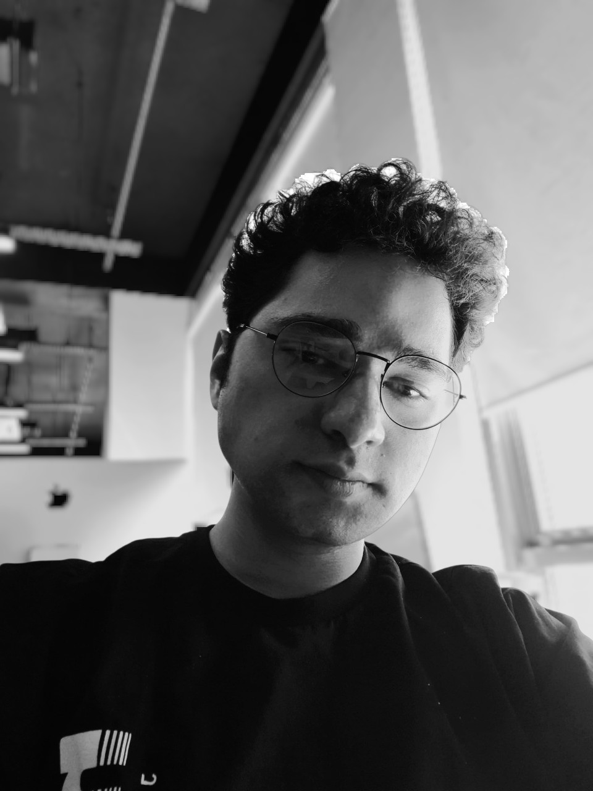

Merhaba! Ben Enes, Bilgisayar Programcılığı ön lisans eğitimimi tamamladıktan sonra, bilgi teknolojileri alanındaki yetkinliklerimi daha da geliştirmek amacıyla Yönetim Bilişim Sistemleri lisans programında eğitimime devam ediyorum. Aynı zamanda, kodlama becerilerimi ileri seviyeye taşımak ve gerçek dünya projelerinde deneyim kazanmak üzere 42 Türkiye’de eğitimime devam ediyorum.
Vizyon: Teknolojinin hızla geliştiği günümüzde, yazılım geliştirici olarak vizyonum; yenilikçi teknolojileri takip eden, karmaşık problemleri analiz ederek etkili çözümler üretebilen ve geliştirdiği projelerle gerçek dünyada değer yaratan bir profesyonel olmaktır. Web ve mobil teknolojiler başta olmak üzere dijital dünyada kullanıcı odaklı, güvenilir ve ölçeklenebilir yazılımlar geliştirerek insanların hayatını kolaylaştıran sistemler üretmeyi hedefliyorum. Sürekli değişen teknoloji ekosistemine uyum sağlayarak, geleceğin dijital çözümlerini geliştiren bir yazılım geliştirici olmayı amaçlıyorum.
Misyon: Yazılım geliştirme sürecinde sürekli öğrenmeye, kendimi teknik ve analitik açıdan geliştirmeye ve edindiğim bilgileri gerçek projelerde uygulamaya odaklanıyorum. Her projede temiz kod, sürdürülebilir mimari ve iyi bir kullanıcı deneyimi oluşturmayı öncelikli hedef olarak görüyorum. Modern yazılım teknolojilerini kullanarak verimli, güvenilir ve ölçeklenebilir çözümler üretmek; ekip çalışması, iletişim ve disiplinli bir çalışma yaklaşımıyla projelere değer katmak misyonumun temelini oluşturmaktadır. Bu doğrultuda, geliştirdiğim projelerle hem bireysel gelişimimi sürdürmeyi hem de teknoloji dünyasına katkı sağlayan bir yazılım geliştirici olarak sektörde güçlü bir yer edinmeyi hedefliyorum.
